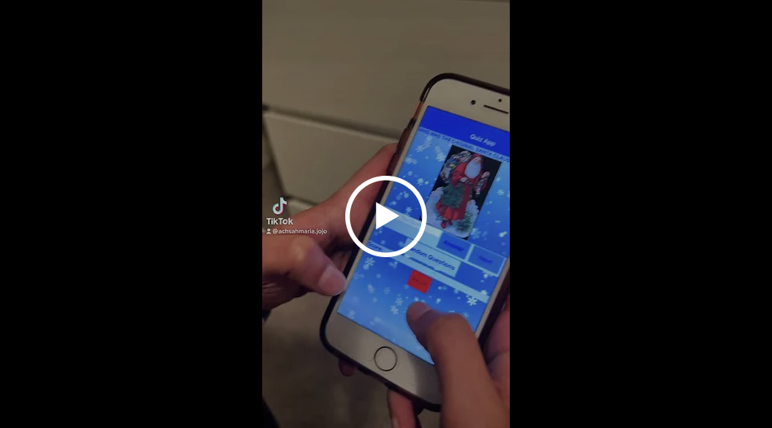
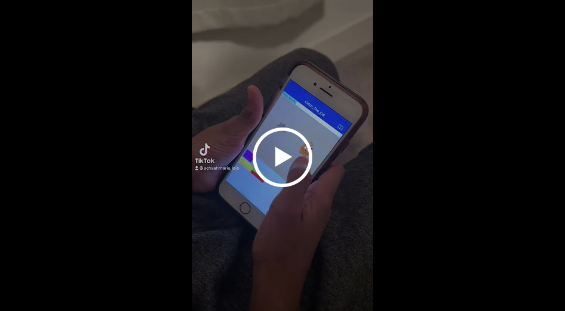
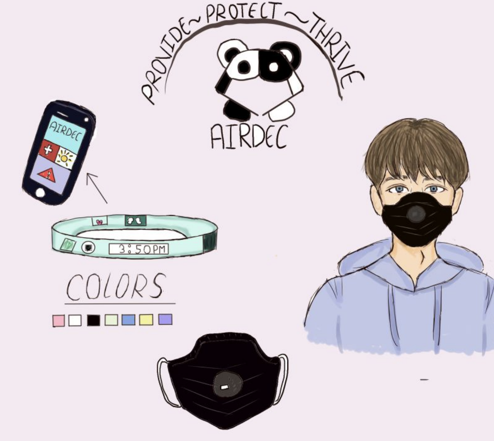

This is a game I created called Quiz A Wizard. I used App Inventor and block code to write my program. The goal of the game is to test the user’s knowledge of various questions and make it a fun way to help improve the user’s intelligence by scoring points to win.
This is a game called Catch The Cat. I used App inventor to write my program. It is a game that makes users touch an image that moves across the screen to gain points and win. The goal of the game is to touch the cat that moves randomly across the screen without touching the surroundings or the rat. Touching the rat will make you lose the game while touching the surrounding or the floor will deduct 2 points. It is just a fun game for users to play as entertainment.
In this presentation, I learned to identify a real-world problem, conceptualize an advanced hardware product that utilizes flexible hybrid electronics (FHE), and build a business model around it. I also gained experience in pitching my product idea to a panel of representatives from business, technology, and educational environments. Overall, I learned key information regarding advanced technology manufacturing and entrepreneurship.
